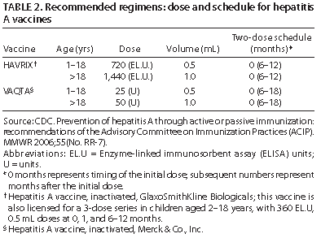

Two products are available for the prevention of HAV infection: hepatitis A vaccine (Table 2) and immune globulin (IG) for IM administration. Hepatitis A vaccines are prepared from formalin-inactivated, cell-culture–derived HAV and have been available in the United States since 1995, initially for persons aged ≥2 years. In 2005, the vaccines were approved by FDA for persons aged ≥12 months, and the vaccine is available for eligible children and adolescents aged <19 years through the VFC program (telephone: 800-232-4636).

Administered IM in a 2-dose series at 0 and 6–12 months, these vaccines induce protective antibody levels in virtually all adults. By 1 month after the first dose, 94%–100% of adults have protective antibody levels; 100% of adults develop protective antibody after a second dose. In randomized controlled trials, the equivalent of 1 dose of hepatitis A vaccine administered before exposure has been 94%–100% effective in preventing clinical hepatitis A (2). Kinetic models of antibody decline indicate that protective levels of antibody persist for at least 20 years.
IG is a sterile solution of concentrated immunoglobulins prepared from pooled human plasma processed by cold ethanol fractionation. In the United States, IG is produced only from plasma that has tested negative for hepatitis B surface antigen, antibodies to HIV and HCV, and HCV RNA. In addition, the process used to manufacture IG inactivates viruses (e.g., HBV, HCV, and HIV). When administered IM before or within 2 weeks after exposure to HAV, IG is >85% effective in preventing HAV infections.
A combined hepatitis A and hepatitis B vaccine has been developed and licensed for use as a 3-dose series in adults aged ≥18 years (Table 3). When administered IM on a 0-, 1-, and 6-month schedule, the vaccine has equivalent immunogenicity to that of the monovalent vaccines.